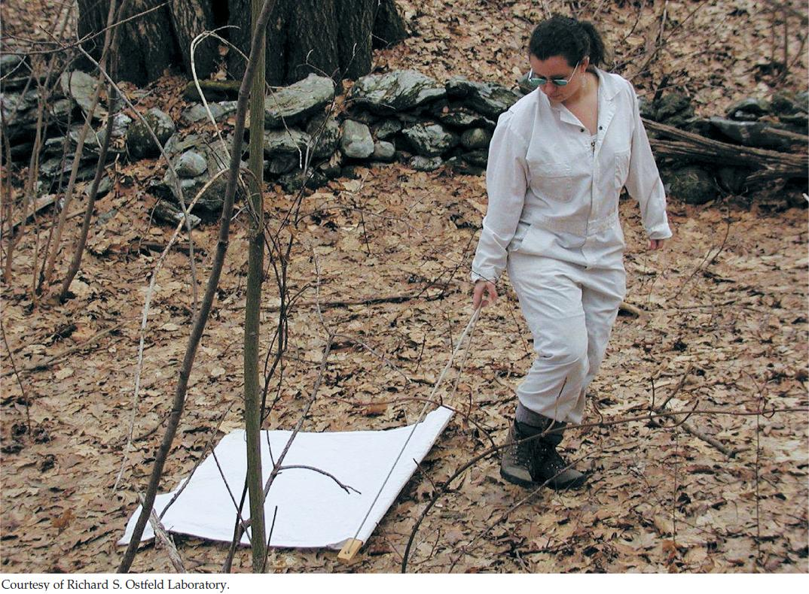

| 42 | Populations |
|
KEY CONCEPTS
42.1 Populations Are Patchy in Space and Dynamic over Time 42.2 Births Increase and Deaths Decrease Population Size 42.3 Life Histories Determine Population Growth Rates 42.4 Populations Grow Multiplicatively, but the Multiplier Can Change 42.5 Immigration and Emigration Affect Population Dynamics 42.6 Ecology Provides Tools for Conserving and Managing Populations |

A field worker sweeps for ticks in the forests near Millbroxok, New York.
|
Ecologist Rick Ostfeld was studying white-footed mice (Peromyscus leucopus) and eastern chipmunks (Tamias striatus) at the Cary Institute of Ecosystem Studies in Millbrook, New York, when an unexpected event took his work in a new direction. Ostfeld and his colleague Clive Jones were working on these rodents in order to understand what triggers the dramatic once-in-adecade outbreaks of invasive gypsy moths (Lymantria dispar) that defoliate oak forests in North America. They suspected that the outbreaks start when the moths escape control by mice and chipmunks, which eat moth pupae.
In 1991, soon after the study began, one of the field assistants discovered that half his face was paralyzed and that he could not close one eyelid. (He devised a protective eye patch so that he could continue his fieldwork.) The eventual diagnosis was Lyme disease. Scientists at the time were only beginning to understand this disease, which was not described until 1975 and whose cause—infection by bacteria of the genus Borrelia—was not identified until 1982. By 1991, epidemiologists had discovered that Lyme disease is transmitted by Borrelia-infected black-legged ticks (Ixodes scapularis) when they bite hosts, and that Lyme disease risk increases with the abundance of infected ticks. Tick hosts include white-tailed deer, birds, lizards, and small mammals as well as humans.
Millbrook turned out to be at the epicenter of the emerging Lyme disease epidemic, and Ostfeld turned his attention to black-legged ticks as the disease vectors (organisms that transmit pathogens). He had already been counting ticks on live-trapped mice and chipmunks. Now he began to study how the abundance of rodents and other vertebrate hosts affects tick abundance and infection rate. He discovered that small mammals are the primary reservoir for Borrelia (they harbor it without getting sick). Ticks are not infected when they hatch from eggs as larvae; they become infected when they bite an infected host as a larva or nymph. It turns out that birds and lizards do not harbor Borrelia, and that most ticks are already infected by the time they are adults able to climb high enough into the vegetation to encounter large hosts such as deer.
From his previous work, Ostfeld already knew that rodent abundance soars when oaks produce a big acorn crop. Now he found that the number of tick larvae that survive to become nymphs, and of nymphs that survive to become adults, increases with rodent numbers. His next goal was to use this information about rodent, oak, and tick population sizes to determine how humans can slow the spread of Lyme disease.
How does understanding the population ecology of disease vectors help us combat infectious diseases?